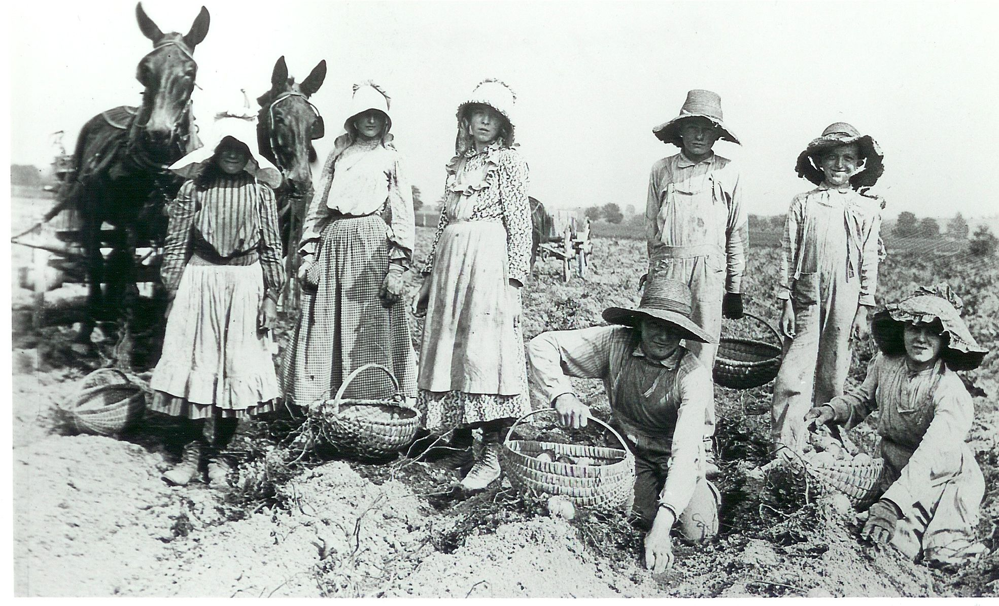
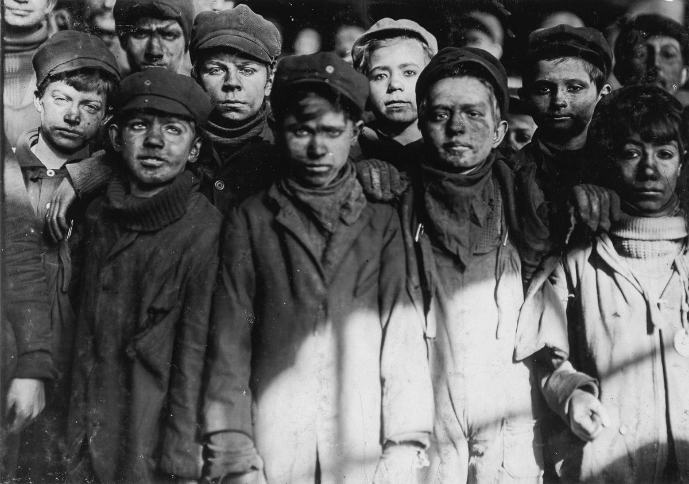
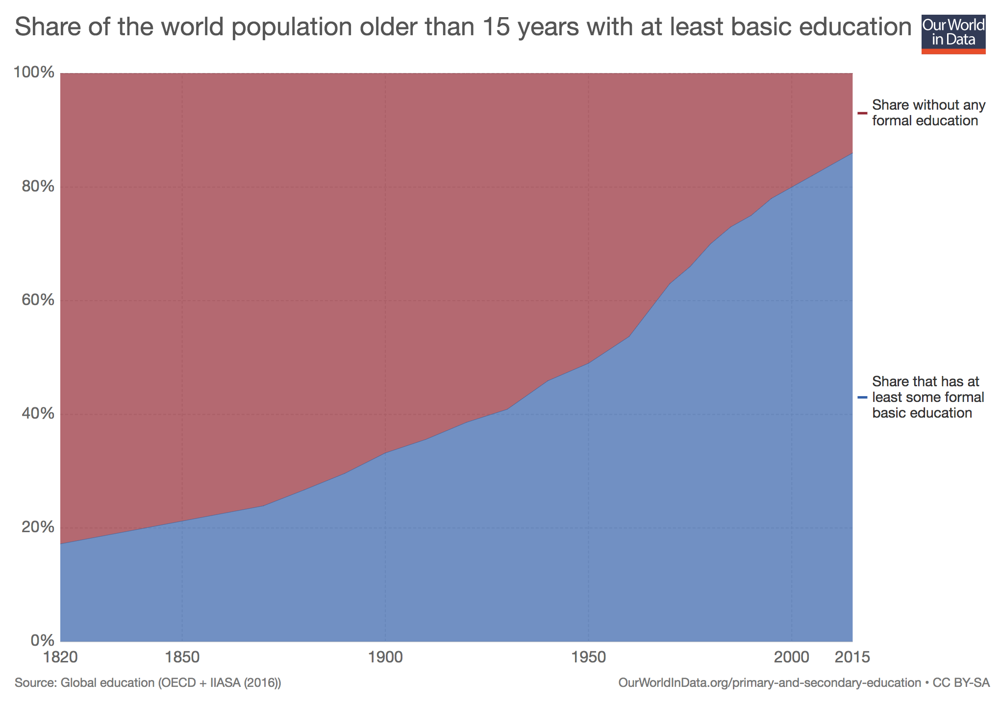

Timeline of legal changes in Canada
1800's
1800 - children worked to help family (age 7) 
1870-1880 - provincial legislations regulating child labour in factories and mines.

1877 - BC restrict child employment in mines
1900's - 2000's
1911 - 40% (5-9 age) worked / 50% (10-19 age) in school
1926 - International labour organization makes convention that defines slavery and identifies child labour.
1929 - Children under 14 legally excluded from factory and mine employment in most provs
1959 - Canada ratified ILO convention

2000 - Canada ratified the international declaration of fundamental principles and rights at work treaty
Children under 16 has employment restricted and school attendance is mandatory. Legislation governs min wage, hours and time of day for youth, protects minors from dangerous or hazardous conditions.